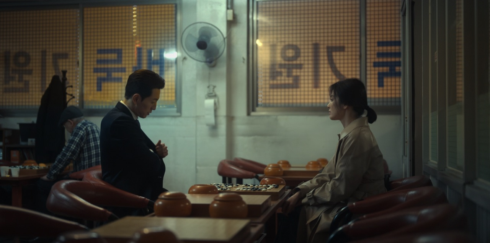
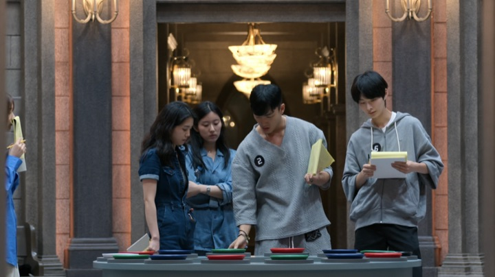

같은 장면을 보는 사람들과 반응을 나누며 넷플릭스를 즐기세요.
Chrome 120 이상에서 사용 가능PC 크롬에서 설치할 수 있어요
이 장면에서 다른 사람들은 어떤 반응을 남겼는지 보이고, 나도 반응을 남길 수 있어요.

때로는 더 많은 사람들과, 때로는 가까운 사람들과. Replix에서 함께 보는 방식을 골라보세요.
같은 회차를 보는 모든 사람과 장면마다 반응을 나눠요. 영상 위로는 탄막이 흐르고, 지금 몇 명이 함께 보는지도 보여요.
여기서 다 같이 비명 지르는 거 맞죠
숨 참고 보는 중
이 대사 진짜 명대사
와 연출 미쳤다
초대한 사람끼리 재생을 맞춰 보며 이야기해요. 누가 멈추거나 넘기면 모두의 화면이 함께 움직여요.
여기 다시 보자
방금 그 표정 봤어? 소름 돋았어
❤️ 2다음 화는 주말에 같이 보자
32:47채팅이 몰린 장면은 재생바 위에 봉우리로 쌓이고, 지금 사람이 몰려 있는 지점에는 시청 중 표시가 떠요.

함께 보는 중데블스 플랜2 함께 보는 중나는 SOLO 함께 보는 중진격의 거인 함께 보는 중케이팝 데몬 헌터스이 장면을 먼저 본 사람들이 남긴 채팅이에요. 내가 그 장면을 보는 순간, 저장된 채팅이 실시간 채팅처럼 나타나요.
같은 장면을 보고 있다면, 서로의 채팅이 바로 전달돼요.
웹 스토어에서 한 번 누르면 끝입니다. 로그인은 Google 계정으로 한 번만 하면 됩니다.
넷플릭스에서 평소처럼 재생하세요. 채팅창이 자동으로 나타납니다.
지금 보는 장면에 채팅을 남기면, 같은 장면을 보는 다른 시청자들에게 전달됩니다.